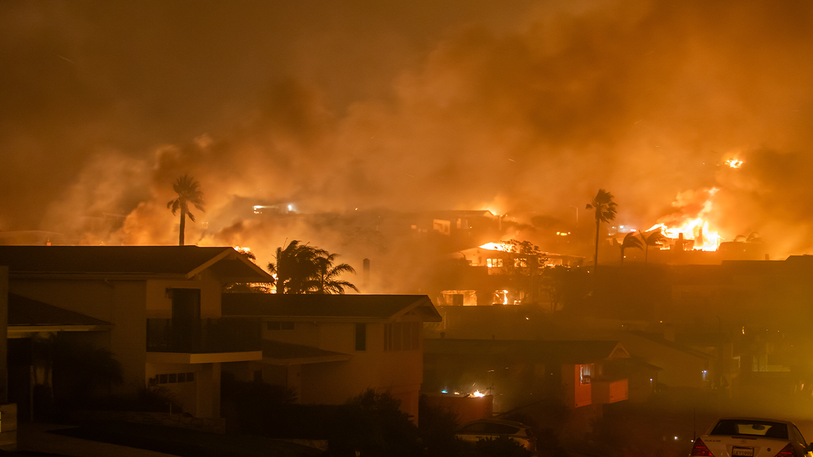
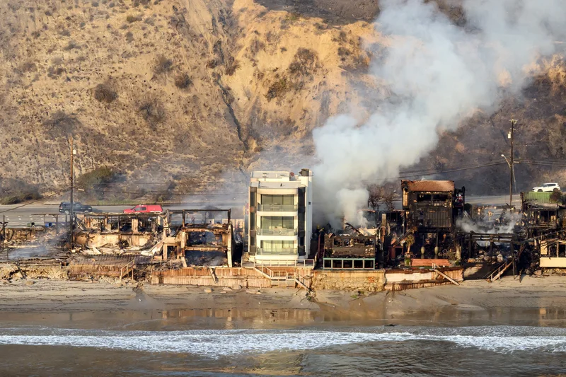

Remediation
 |
|---|
| Palisades Fire |
In the first weeks of January 2025, fires engulfed entire neighborhoods in Southern California. Professional responders made heroic efforts to save what they could, but the losses were devastating, and it will torment the state for years to come.
But fires are not a new phenomenon, especially in a dry climate like SoCal. Wildfires are frequent and regular occurrences in nature, so some species of trees, Pitch Pine are adapted to them. But apparently, Californians are not.
When an incident happens, our immediate attention is to put out the fire; stop the bleeding; perform CPR. This is the response. Almost everyone does it for survival. In my line of work, an incident could be:
Server is down! Let’s get it back up.
Users can’t log in! Revert and redeploy.
App is crashing - make it not do that!
The fire is put out from the emergency, and normal operations resume. If there was a rollback, a debugging session would ensue to locate the issue, patch a fix, and carefully push the fix. This is the recovery.
After the fire is put out, homeowners will collect insurance and financially recover for another chance to rebuild their lives. For those who choose to rebuild their homes, should it be different from last time? — Or are they just build the same houses out of sticks of wood and cover it in asphalt shingles?
If we look to the flood zones in New Orleans after Hurricane Katrina, they made the same types of homes as they did before. Even when there were examples of surviving homes, they were deemed too expensive to construct. For the lowlands of Louisiana, another hurricane is a matter of when, not if.
 |
|---|
| A concrete house in Malibu, spared from the fires |
If we look at the exceptional examples of how the fire was prevented, we can choose change the way we build new houses going forward. This is remediation. It’s an engineer’s work to point out the tragedies of the past and build its remedies into our environment.
If tests would have prevented an application error, write automated tests. If redundancy would have saved the server, add a duplicate instance on standby. Let the pain and fear of repeated failure be the motivation behind the changes.
Personally, I am living a life of emotional remediation triggered by tragedies in my family history. How do I remediate against another Korean War that turned my grandparents into refugees? How do I remediate against divorce? Suicide? Loneliness? I seek redemption, and it’s great fun.